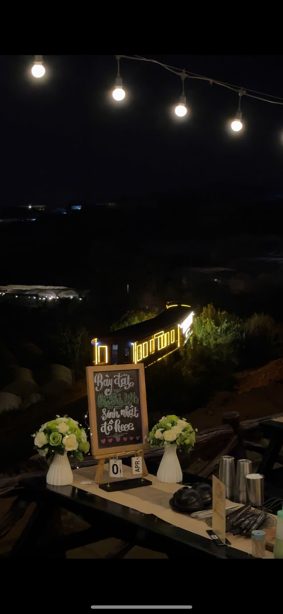

Chợ đêm Đà Lạt ở đâu?
Chợ đêm Đà Lạt nằm ngay trung tâm, trên đường Nguyễn Thị Minh Khai, mở từ 18h đến 23h30 mỗi tối. Đây là thiên đường ăn vặt và mua sắm cho du khách.
1. Trạm Dừng Chill — View đẹp nhất, cách chợ đêm 10 phút xe
Quán nướng Đà Lạt gần chợ đêm với view "triệu đô": hoàng hôn, xe lửa cổ và biển sao nhà lồng. Nằm tại 111 Huỳnh Tấn Phát, P11 — cách chợ đêm khoảng 10 phút chạy xe máy. Ăn nướng xong, chạy xe xuống chợ đêm dạo mát, mua quà.
Giá: 95K-300K/người | Giờ: 15:00-23:00
Tip: Đến lúc 16h30 ăn nướng ngắm hoàng hôn, 20h xong xuôi chạy về chợ đêm vừa kịp!

2. Quán nướng đường Phan Bội Châu
Cách chợ đêm chỉ 300m đi bộ. Nướng than hoa bình dân, đồ ăn tươi. Set nướng 2 người từ 180K. Không gian nhỏ nhưng đông khách.
3. BBQ vỉa hè Hoà Bình
Ngay cạnh quảng trường Lâm Viên, đi bộ 5 phút tới chợ đêm. Nướng xiên que, bắp nướng, khoai nướng — kiểu street food. Giá siêu rẻ 30-60K/người.
4. Nướng Hải Sản Nguyễn Chí Thanh
Chuyên hải sản nướng: mực, tôm, sò điệp. Cách chợ đêm 500m, đi bộ 7 phút. Giá 200-350K/2 người, đồ ăn tươi sống.
5. Quán nướng sân thượng trung tâm
Nướng trên sân thượng nhìn xuống phố đêm Đà Lạt. View đèn thành phố lung linh. Giá 150-250K/người, có bia tươi.
Gợi ý combo hoàn hảo: Nướng + Chợ đêm
16h30: Đến Trạm Dừng Chill ăn nướng ngắm hoàng hôn → 18h: Xe lửa chạy qua, chụp hình → 19h: Biển sao nhà lồng → 20h: Chạy về chợ đêm dạo mát, ăn vặt, mua quà.
Kết luận
Kết hợp nướng BBQ view đẹp + chợ đêm Đà Lạt là công thức cho buổi tối hoàn hảo! Đặt bàn tại Trạm Dừng Chill trước để chắc chắn có chỗ, đặc biệt cuối tuần.